地政学
ハボローネは南アフリカ国境に近く、内陸国ボツワナの外交、物流、安全保障を束ねます。SADC本部も置かれ、鉱物資源、民主制度、周辺国との往来が交差する南部アフリカの政治舞台です。地域秩序の会議もここで続きます。
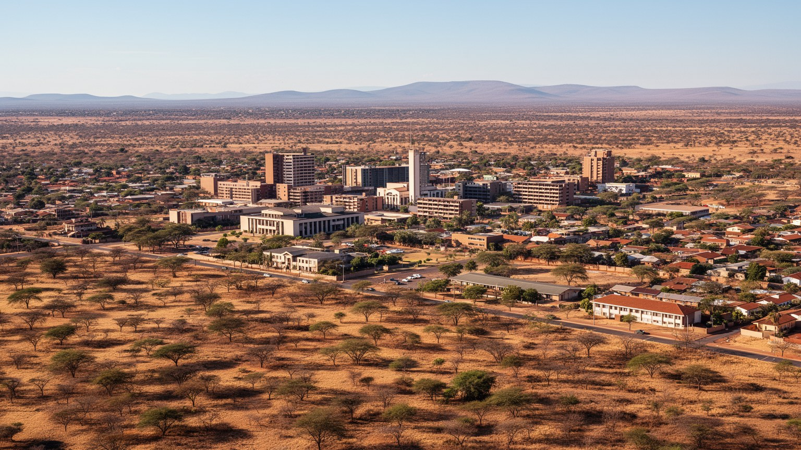
🇧🇼 ボツワナ共和国 / 首都 / World City Atlas
独立直後に国境近くへ築かれた計画首都です。政府、ダイヤモンド経済、大学、SADC外交、水不足、郊外住宅、南アフリカとの往来が、乾いた丘陵の都市に重なっています。
都市の骨格
ハボローネは独立前後に行政中心として整えられ、南アフリカ国境に近い交通軸へ成長しました。乾燥地の水、鉱業収入、若い人口、外交機関、郊外化が、落ち着いた街路の裏側で都市の圧力を作っています。
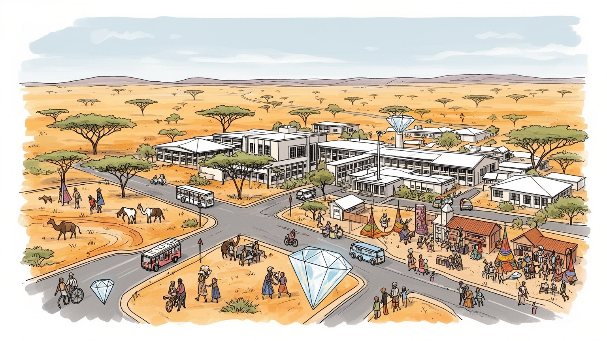
ハボローネは南アフリカ国境に近く、内陸国ボツワナの外交、物流、安全保障を束ねます。SADC本部も置かれ、鉱物資源、民主制度、周辺国との往来が交差する南部アフリカの政治舞台です。地域秩序の会議もここで続きます。
政府機関、ダイヤモンド関連、金融、小売、大学、建設、サービス業が雇用を作ります。鉱業収入は国を支えますが、若者の仕事、民間産業の厚み、技能育成が首都の日常課題として残ります。安定の次を探す労働市場です。
ツワナ文化、英語行政、キリスト教会、伝統儀礼、南アフリカ由来の音楽や消費文化が混ざります。都市は新しく見えても、親族、村、葬礼、教会、大学が人々の帰属を支えています。週末の礼拝も街を深く結びます。
住民は役所、大学、ショッピングモール、郊外住宅、ミニバス、乾季の水を使い分けます。旅行者はハボローネ・ゲーム保護区、クガレ丘、市場、博物館を経て、国境とカラハリへ向かいます。日常と自然が近い首都です。
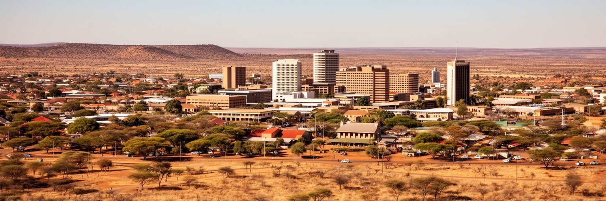
ハボローネは、古い港町や鉱山町がそのまま首都になった都市ではありません。ボツワナ独立の前後に、行政機能を担う新しい首都として整えられました。南アフリカ国境に近い鉄道と道路の軸、周辺の土地条件、水源、既存集落との関係が選定に影響し、独立国家の官庁、議会、学校、住宅地が段階的に置かれていきました。都市の中心は大きすぎず、政府街、商業施設、住宅地、大学、郊外のモールが比較的短い距離で結ばれます。この計画性は、首都を読みやすくする一方、成長が速くなるとすぐに余白の不足を見せます。自家用車依存、郊外化、道路沿いの商業、周辺村との一体化が進み、当初の整った構造だけでは現在の生活を支えきれません。乾いた丘と低い建物が作る落ち着きの奥に、人口増加と中所得国の都市課題があります。ハボローネは若い国家が自分の政治空間を作った場所であり、その後の成長が計画を試し続ける都市です。独立記念碑や官庁街を歩くと、植民地時代の辺境から主権国家の中心へ移った変化が見えます。街路の広さ、庁舎の配置、郊外の宅地は、国家建設の実務が日常の形になったものです。都市の若さは、歴史の浅さだけでなく、制度を自分たちで設計した記憶として残ります。中心部の静かな広場や直線的な道路にも、独立後の国家が秩序と開放性を両立させようとした意図が読み取れます。
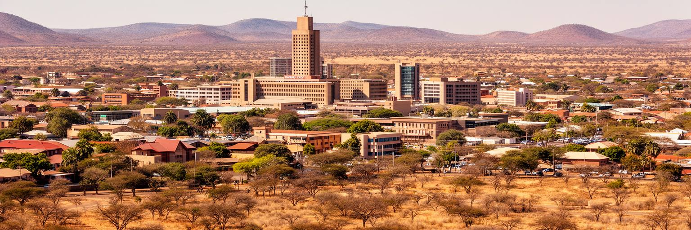
ハボローネは、ボツワナの政治的安定を最も具体的に見せる都市です。大統領府、議会、裁判所、中央省庁、外交機関が集まり、選挙、予算、鉱業政策、教育、保健、野生動物保護、周辺国外交がここで扱われます。ボツワナはアフリカ諸国の中で比較的長く民主制度と財政規律を保ってきた国として知られますが、その評価は抽象的な美談ではなく、官僚制、資源管理、地方行政、司法、政党政治の積み重ねに支えられています。首都の落ち着いた行政街は、危機がないことを意味しません。ダイヤモンド依存、若者の失業、格差、汚職への監視、干ばつ対策、移民管理など、政府が向き合う問題は多いです。ハボローネでは政治家や官僚、大学研究者、企業人、市民団体の距離が比較的近く、政策の議論が社会に届きやすい面があります。一方で、中央政府機能が集中するほど、地方の声をどう制度に反映させるかが問われます。首都は国家の成功を示すショーケースであると同時に、成功の条件が今も維持できるかを検査される場所です。庁舎の周辺にある学校、店、バスターミナルの日常は、政治が生活の外側にあるわけではないことを示します。制度への信頼は、窓口の対応や公共サービスの細部にも表れます。小さな首都では行政の評判が人づてに広がりやすく、説明責任も身近に感じられます。信頼も育ちます。
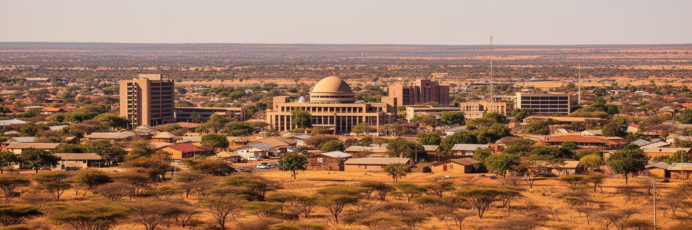
ハボローネの経済を語る時、ダイヤモンドを避けることはできません。採掘現場は首都の外にありますが、鉱業収入、販売、政府歳入、外貨、教育投資、インフラ整備はハボローネの行政と企業活動を通じて可視化されます。ボツワナはダイヤモンド資源を比較的慎重に管理し、国家収入を公共サービスと安定に結びつけてきました。そのため首都には政府機関だけでなく、金融、保険、鉱業関連サービス、法律、会計、小売、不動産が集まりました。ただし、資源に支えられた豊かさは永続を保証しません。世界の宝飾需要、合成ダイヤモンド、鉱山の寿命、価格変動は、首都の雇用と財政にも影響します。若者が増える中で、鉱業以外の産業をどれだけ育てられるかが重要です。IT、観光、教育、物流、クリエイティブ産業、小規模製造は候補になりますが、技能、人材、資本、市場の厚みが必要です。ハボローネのビジネス街やモールは中所得国の自信を示しますが、同時に収入格差と機会の偏りも見せます。ダイヤモンド経済を読むことは、資源国家が成功した後に何を次の基盤にするかを読むことです。首都で働く人々の仕事は、鉱山の石を直接扱わなくても、鉱物収入が作った制度と消費に支えられています。だからこそ、資源後の準備は遠い将来の話ではありません。税収の使い道、教育の質、民間投資の広がりが、次の都市経済を決めます。
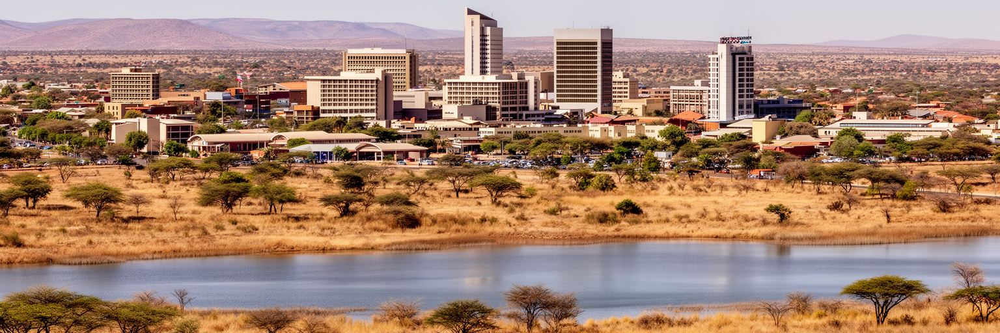
ハボローネの日常を最も現実的に支配する条件の一つは水です。ボツワナは乾燥した内陸国で、首都周辺も降水量が限られ、年ごとの雨の偏りが大きい地域です。ハボローネ・ダムや広域の送水網は都市を支えますが、人口増加、住宅開発、工業、商業、気候変動は需要を押し上げます。乾季や干ばつの記憶は、住民にとって抽象的な環境問題ではなく、家庭の貯水、庭の水やり、洗車、学校、病院、建設現場に関わる生活条件です。水不足は都市計画の形も変えます。どの地区に新しい住宅を認めるか、漏水をどう減らすか、雨水をどう扱うか、節水型の建築や料金制度をどう広げるかが問われます。水が少ない都市では、緑地や街路樹も贅沢ではなく、暑さを和らげる公共インフラになります。一方で、維持には水が必要で、乾燥地の景観に合う植栽や管理が欠かせません。ハボローネの明るい空と低い丘は魅力ですが、その風景は水の制約の上に成り立っています。首都の成長を考える時、道路や建物だけを見ても足りません。蛇口から安定して水が出るか、雨が少ない年にも学校と病院が動くかが、都市の信頼を決めます。水の管理は、行政能力と住民の協力が同じ方向を向いて初めて機能します。乾いた都市の強さは、見えない管路にも宿ります。節水を暮らしの習慣にできるかどうかも、首都の成熟度を示します。
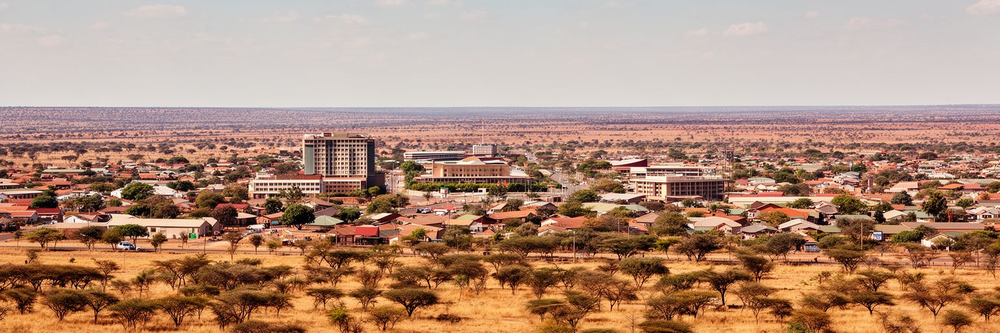
ハボローネの住宅地は、独立後の計画的な首都から、周辺へ広がる大都市圏へと変化しています。中心部の官庁街や商業地区の周りに、低層住宅、集合住宅、ゲーテッドな開発、学生向け住居、周辺村の宅地化が重なります。収入が安定した世帯は車で郊外の住宅地を選び、若者や低所得層は家賃、通勤費、住居の質の間で選択を迫られます。住宅問題は単に家の数だけではありません。水道、下水、電力、道路、学校、診療所、公共交通、買い物の距離がそろわなければ、郊外の暮らしは時間と費用を増やします。ハボローネではモールや道路沿いの商業が生活の中心になりやすく、歩いて済む近隣生活をどう作るかも課題です。周辺集落との境界が曖昧になるほど、土地権利、伝統的な土地管理、都市計画、行政区域の調整も複雑になります。首都の成長は、国家の豊かさを住宅として見せる一方、誰が便利な場所に住めるかという公平性を露出します。若い家族が学校と仕事に近い住まいを得られるか、高齢者が車なしで暮らせるか、学生が安全に通えるかは、都市の未来を決める細部です。乾燥地の住宅は日陰、断熱、通風、水利用も重要です。ハボローネの郊外化を読むことは、中所得国の首都が成長の快適さと負担をどう分配するかを読むことです。住まいの質は家計だけでなく、通勤時間、子どもの学習、近隣の安全にもつながります。
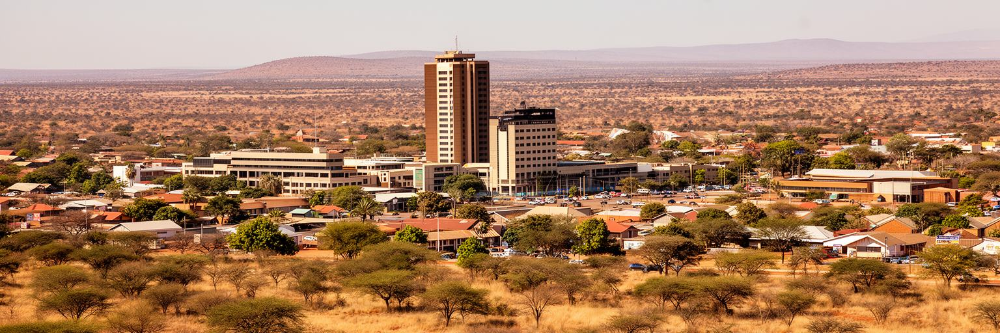
ハボローネは新しい首都ですが、文化が薄い都市ではありません。ツワナ語と英語が行き交い、教会、家族儀礼、村とのつながり、伝統的な首長制の記憶、現代の音楽やファッションが重なります。大学や専門学校は、地方から若者を集め、行政、会計、教育、医療、IT、法律、観光へ人材を送り出します。学生街、図書館、カフェ、ショッピングモール、教会の集会は、都市の公共文化を形作ります。ボツワナは比較的教育投資を重視してきましたが、学歴がすぐ安定した仕事に結びつくとは限りません。若者は公務員、民間企業、起業、国外就労の間で現実的に進路を考えます。文化面でも、都市の消費は南アフリカのメディアや商品と強くつながりながら、地元の言語、食、音楽、家族の作法を保っています。日曜日の教会、葬礼への参加、村への帰省、大学での議論は、別々の世界ではなく同じ生活の中にあります。ハボローネの文化を理解するには、博物館や舞台だけでなく、学生の通学路、教会前の人波、家庭の集まり、モールの会話を見る必要があります。若い首都では、国民文化は保存されるだけでなく、教育を受けた世代によって毎日作り直されています。女性の就業、デジタル学習、英語の職場文化も、家族と地域の価値観を変えています。都市の教室は、国家の次の語り方を育てる場所です。そこでは伝統を守ることと、外の知識を使うことが同時に学ばれます。
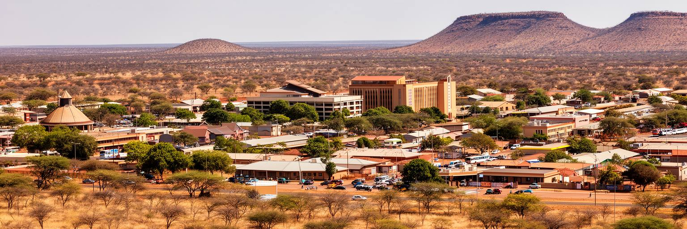
ハボローネの位置は、ボツワナの内陸性と南アフリカ依存を同時に示します。首都は南アフリカ国境に近く、道路と鉄道はヨハネスブルク方面、国内の鉱山都市、北部の観光地へつながります。国際空港は小規模ながら行政とビジネスの移動を支え、陸路の国境通過は物流、買い物、出稼ぎ、家族訪問に深く関わります。内陸国の首都では、港までの距離、通関、燃料価格、周辺国の制度が物価と企業活動に直接響きます。ハボローネの店に並ぶ商品や建設資材の多くは、国境を越える流れの中で届きます。市内交通では、自家用車、コンビ、タクシー、徒歩が混在し、郊外化とともに通勤距離が伸びています。道路整備は便利さを増しますが、車依存を強めると渋滞、事故、排出、低所得層の移動負担が増えます。将来の首都には、バスの信頼性、歩道、日陰、乗り継ぎ、周辺集落との公共交通が重要になります。国境近くの都市は外へ開かれている一方、外部の景気や政策にも影響されやすいです。ハボローネを読む時、街路だけでなく、南部アフリカの物流地図を重ねる必要があります。首都の小売、鉱業サービス、外交は、この広い移動圏に支えられています。朝の通勤車列と長距離トラックは、都市生活と地域経済が同じ道路を使うことを物語ります。国境の混雑や燃料価格の変化は、翌日の店頭価格にもつながります。
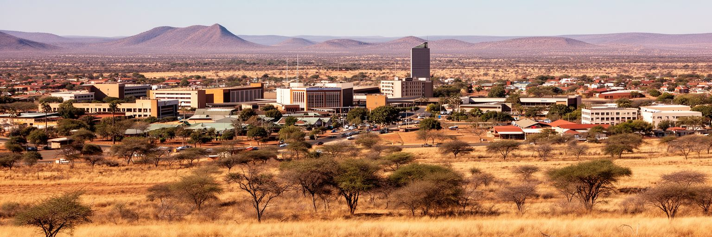
ボツワナ観光といえばオカバンゴ・デルタやチョベ国立公園が思い浮かびますが、ハボローネにも都市近郊の自然があります。ハボローネ・ゲーム保護区、クガレ丘、ダム周辺の風景は、首都に滞在する人が短い時間で乾燥地の自然を感じる入口になります。大型のサファリ拠点ではないものの、鳥、アンテロープ類、丘陵の眺め、夕方の光は、都市と自然保護の距離を近づけます。ボツワナの観光政策は、野生動物と低密度の高付加価値旅行で知られます。その玄関として、首都は旅行者の手続き、乗り継ぎ、ガイド、航空、宿泊、研修、政府許認可を支えます。観光収入は遠い自然保護区だけでなく、ハボローネのホテル、レストラン、旅行会社、工芸販売にも広がります。一方で、都市の拡大は野生動物の生息地、丘陵の景観、水辺の環境に圧力をかけます。自然が近いことは、保護が不要という意味ではありません。むしろ住宅地や道路が近づくほど、人と動物、レクリエーション、教育、保全の境界を丁寧に設計する必要があります。ハボローネの観光を読むことは、首都が国の大きな自然イメージをどう日常に接続するかを読むことです。短い滞在でも、丘に登り、市場を歩き、保護区を訪れれば、乾燥地の都市が自然と切り離されていないことが分かります。都市の子どもが野生動物を近くで学ぶ場としても価値があります。
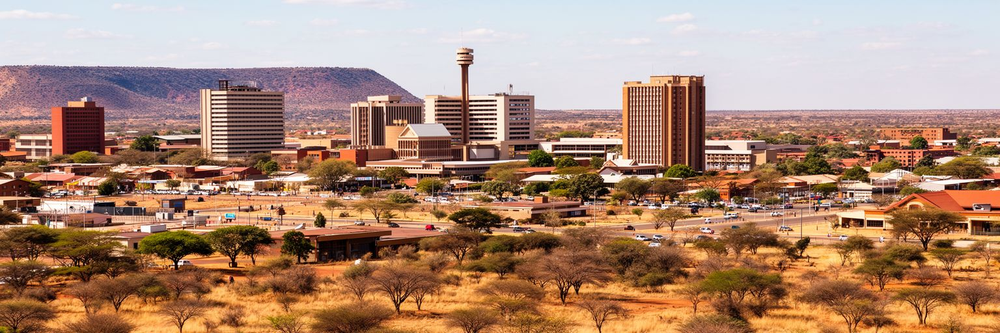
ハボローネには南部アフリカ開発共同体、SADCの本部があり、都市の国際的な役割を強めています。SADCは貿易、インフラ、エネルギー、平和安全保障、保健、移民、農業、産業政策など、広い地域課題を扱います。ボツワナは軍事力や人口で地域を圧倒する国ではありませんが、政治的安定と地理的な位置により、対話の場を提供してきました。首都に国際機関があることは、ホテルや会議施設、通訳、交通、警備、研究、外交官の生活にも影響します。会議の議題は一見すると市民生活から遠く見えますが、越境物流、電力、感染症、干ばつ、難民、鉱物市場、関税は、ハボローネの物価や雇用にも関わります。南部アフリカは、南アフリカ経済の大きさ、ジンバブエやモザンビークなど周辺国の政治経済、港湾へのアクセス、気候変動の影響を共有しています。ハボローネの外交は、巨大な首都の派手さではなく、比較的小さな都市で実務的に交渉を重ねる性格を持ちます。SADC本部の存在は、ボツワナが資源国家であるだけでなく、地域秩序の調整役でもあることを示します。会議場の外では、参加者が同じ道路、店、空港を使い、地域政治が都市の日常に静かに入り込みます。首都の国際性は高層ビルの数ではなく、集まる議題の重さで測れます。小国の首都が信頼されることは、地域に対話の余地を残す資産です。
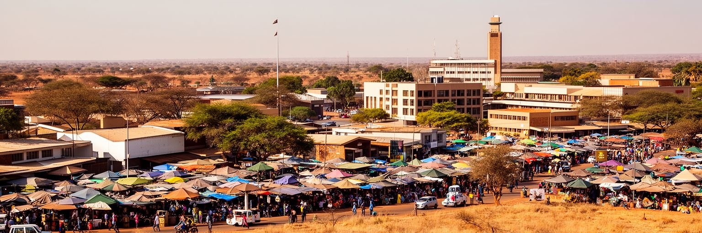
ハボローネの日常は、官庁街やビジネス街だけでなく、市場、露店、バスターミナル、モール、教会、学校の前でよく見えます。住民は大型スーパーでまとめ買いをし、露店で昼食や携帯品を買い、コンビやタクシーで移動し、週末には家族行事や村への訪問を組み込みます。ボツワナの首都は所得水準が比較的高い国の顔を持ちますが、すべての住民が同じ快適さを享受しているわけではありません。公務員、銀行員、学生、家事労働者、建設作業員、小商人、移民労働者は、同じ都市を違う速度と予算で使います。モールは空調、駐車場、安全、消費の選択肢を提供しますが、車を持たない人には距離が負担になります。露店や小市場は柔軟な雇用と安い食を支える一方、規制、衛生、場所の確保に左右されます。日常の都市を読むには、どこに座れるか、日陰があるか、歩道が続くか、公共交通の待ち時間がどれほどかを見る必要があります。ハボローネの生活は、乾いた気候の中で時間と水と移動費をやりくりする実務です。市場の会話、教会の集まり、学校帰りの子ども、夕方の交通は、国家統計では見えにくい都市の温度を教えてくれます。首都の豊かさは、大きな建物よりも、普通の人が毎日使う場所の使いやすさに表れます。日陰のベンチや安全な横断歩道も、暮らしの質を測る小さな指標です。小さな安心です。
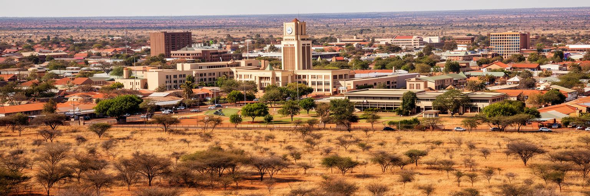
ハボローネを読む面白さは、都市の規模以上に国家の選択が集まっていることです。独立後に築かれた計画首都は、政府の安定、ダイヤモンド収入、教育投資、SADC外交、南アフリカとの国境関係を一つの生活圏に収めています。街は巨大ではなく、歴史的な石造都心も多くありません。それでも、官庁街からモール、大学、郊外住宅、保護区、国境道路へ移動すると、ボツワナの成功と課題が順に見えてきます。資源をどう公共財に変えるか、若者に仕事をどう作るか、乾燥地で水をどう分けるか、野生動物観光と都市成長をどう両立するか、地域協力の中で小国がどんな役割を果たすか。これらはすべてハボローネの日常に関係します。首都の落ち着きは、問題の不在ではなく、制度と社会が問題を管理しようとしてきた結果です。今後は資源依存の先、気候変動、郊外化、格差、公共交通、文化の多様化がより強く問われます。ハボローネは、派手な観光都市ではなく、アフリカの中所得国がどのように安定を保ち、次の経済を探すかを観察できる都市です。乾いた空、低い丘、整った官庁街、市場の声を同時に見ると、この首都の本質が見えてきます。小さく見える街ほど、国の制度、自然条件、地域政治が近い距離で重なります。だからこの都市は、成功した資源国家の現在だけでなく、その後に必要な選択も静かに映します。